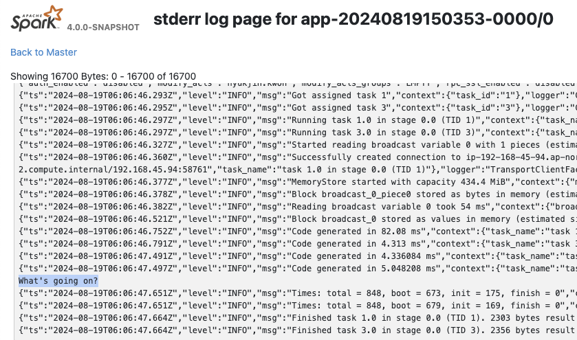
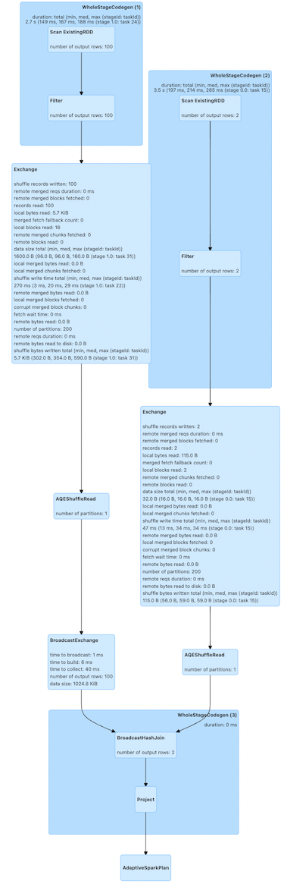
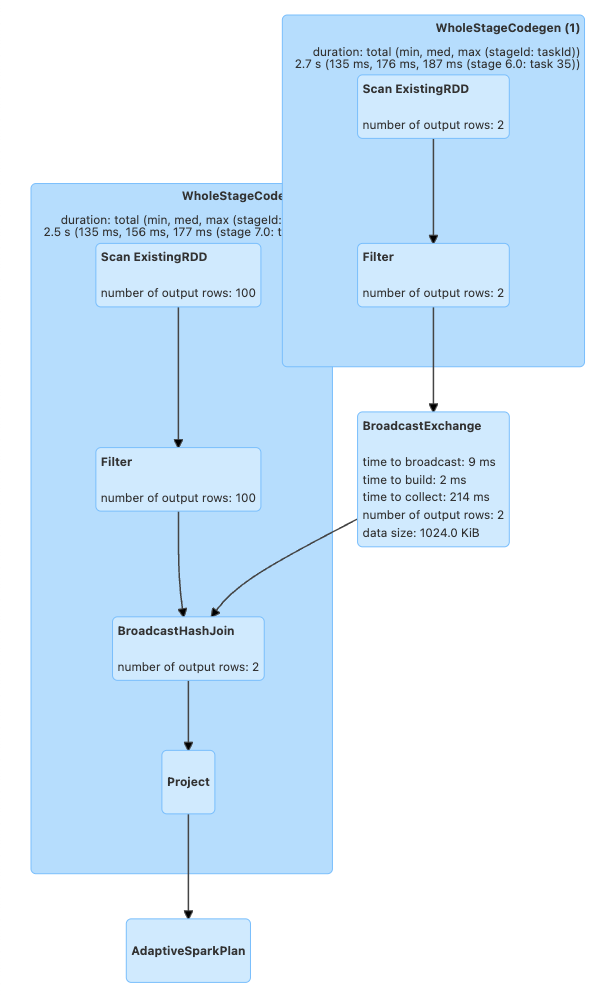

Chapter 4: Bug Busting - Debugging PySpark#
PySpark executes applications in a distributed environment, making it challenging to monitor and debug these applications. It can be difficult to track which nodes are executing specific code. However, there are multiple methods available within PySpark to help with debugging. This section will outline how to effectively debug PySpark applications.
PySpark operates using Spark as its underlying engine, utilizing Spark Connect server or Py4J (Spark Classic) to submit and compute jobs in Spark.
On the driver side, PySpark interacts with the Spark Driver on JVM through Spark Connect server or Py4J (Spark Classic). When pyspark.sql.SparkSession is created and initialized, PySpark starts to communicate with the Spark Driver.
On the executor side, Python workers are responsible for executing and managing Python native functions or data. These workers are only launched if the PySpark application requires interaction between Python and JVMs such as Python UDF execution. They are initiated on-demand, for instance, when running pandas UDFs or PySpark RDD APIs.
Spark UI#
Python UDF Execution#
Debugging a Python UDF in PySpark can be done by simply adding print statements, though the output won’t be visible in the client/driver side since the functions are executed on the executors - they can be seen in Spark UI. For example, if you have a working Python UDF:
[1]:
from pyspark.sql.functions import udf
@udf("integer")
def my_udf(x):
# Do something with x
return x
You can add print statements for debugging as shown below:
[2]:
@udf("integer")
def my_udf(x):
# Do something with x
print("What's going on?")
return x
spark.range(1).select(my_udf("id")).collect()
[2]:
[Row(my_udf(id)=0)]
The output can be viewed in the Spark UI under stdout/stderr at Executors tab.

Non-Python UDF#
When running non-Python UDF code, debugging is typically done via the Spark UI or by using DataFrame.explain(True).
For instance, the code below performs a join between a large DataFrame (df1) and a smaller one (df2):
[3]:
df1 = spark.createDataFrame([(x,) for x in range(100)])
df2 = spark.createDataFrame([(x,) for x in range(2)])
df1.join(df2, "_1").explain()
== Physical Plan ==
AdaptiveSparkPlan isFinalPlan=false
+- Project [_1#6L]
+- SortMergeJoin [_1#6L], [_1#8L], Inner
:- Sort [_1#6L ASC NULLS FIRST], false, 0
: +- Exchange hashpartitioning(_1#6L, 200), ENSURE_REQUIREMENTS, [plan_id=41]
: +- Filter isnotnull(_1#6L)
: +- Scan ExistingRDD[_1#6L]
+- Sort [_1#8L ASC NULLS FIRST], false, 0
+- Exchange hashpartitioning(_1#8L, 200), ENSURE_REQUIREMENTS, [plan_id=42]
+- Filter isnotnull(_1#8L)
+- Scan ExistingRDD[_1#8L]
Using DataFrame.explain displays the physical plans, showing how the join will be executed. Those physical plans represent individual steps for the whole execution. Here, it exchanges, a.k.a. shuffles, the data and performs a sort-merge-join.
After checking how the plans are generated via this method, users can optimize their queries. For example, because df2 is very small, it can be broadcasted to executors and remove the shuffle
[4]:
from pyspark.sql.functions import broadcast
df1.join(broadcast(df2), "_1").explain()
== Physical Plan ==
AdaptiveSparkPlan isFinalPlan=false
+- Project [_1#6L]
+- BroadcastHashJoin [_1#6L], [_1#8L], Inner, BuildRight, false
:- Filter isnotnull(_1#6L)
: +- Scan ExistingRDD[_1#6L]
+- BroadcastExchange HashedRelationBroadcastMode(List(input[0, bigint, false]),false), [plan_id=71]
+- Filter isnotnull(_1#8L)
+- Scan ExistingRDD[_1#8L]
As can be seen the shuffle is removed, and it performs broadcast-hash-join:
These optimizations can also be visualized in the Spark UI under the SQL / DataFrame tab after execution.
[5]:
df1.join(df2, "_1").collect()
[5]:
[Row(_1=0), Row(_1=1)]

[6]:
df1.join(broadcast(df2), "_1").collect()
[6]:
[Row(_1=0), Row(_1=1)]

Monitor with top and ps#
On the driver side, you can obtain the process ID from your PySpark shell to monitor resources:
[7]:
import os; os.getpid()
[7]:
23976
[8]:
%%bash
ps -fe 23976
UID PID PPID C STIME TTY TIME CMD
502 23976 21512 0 12:06PM ?? 0:02.30 /opt/miniconda3/envs/python3.11/bin/python -m ipykernel_launcher -f /Users/hyukjin.kwon/Library/Jupyter/runtime/kernel-c8eb73ef-2b21-418e-b770-92b946454606.json
On the executor side, you can use grep to find the process IDs and resources for Python workers, as these are forked from pyspark.daemon.
[9]:
%%bash
ps -fe | grep pyspark.daemon | head -n 5
502 23989 23981 0 12:06PM ?? 0:00.59 python3 -m pyspark.daemon pyspark.worker
502 23990 23989 0 12:06PM ?? 0:00.19 python3 -m pyspark.daemon pyspark.worker
502 23991 23989 0 12:06PM ?? 0:00.19 python3 -m pyspark.daemon pyspark.worker
502 23992 23989 0 12:06PM ?? 0:00.19 python3 -m pyspark.daemon pyspark.worker
502 23993 23989 0 12:06PM ?? 0:00.19 python3 -m pyspark.daemon pyspark.worker
Typically, users leverage top and the identified PIDs to monitor the memory usage of Python processes in PySpark.
Use PySpark Profilers#
Memory Profiler#
In order to debug the driver side, users typically can use most of the existing Python tools such as memory_profiler that allow you to check the memory usage line by line. If your driver program is not running on another machine (e.g., YARN cluster mode), you can use a memory profiler to debug memory usage on the driver side. For example:
[10]:
%%bash
echo "from pyspark.sql import SparkSession
#===Your function should be decorated with @profile===
from memory_profiler import profile
@profile
#=====================================================
def my_func():
session = SparkSession.builder.getOrCreate()
df = session.range(10000)
return df.collect()
if __name__ == '__main__':
my_func()" > profile_memory.py
python -m memory_profiler profile_memory.py 2> /dev/null
Filename: profile_memory.py
Line # Mem usage Increment Occurrences Line Contents
=============================================================
4 80.6 MiB 80.6 MiB 1 @profile
5 #=====================================================
6 def my_func():
7 79.0 MiB -1.7 MiB 1 session = SparkSession.builder.getOrCreate()
8 80.1 MiB 1.1 MiB 1 df = session.range(10000)
9 84.1 MiB 4.0 MiB 1 return df.collect()
It shows which line consumes how much memory properly.
Python and Pandas UDF#
Note: This section applies to Spark 4.0
PySpark provides remote memory_profiler for Python/Pandas UDFs. That can be used on editors with line numbers such as Jupyter notebooks. SparkSession-based memory profiler can be enabled by setting the runtime SQL configuration spark.sql.pyspark.udf.profiler to memory:
[11]:
from pyspark.sql.functions import pandas_udf
df = spark.range(10)
@pandas_udf("long")
def add1(x):
return x + 1
spark.conf.set("spark.sql.pyspark.udf.profiler", "memory")
added = df.select(add1("id"))
spark.profile.clear()
added.collect()
spark.profile.show(type="memory")
============================================================
Profile of UDF<id=16>
============================================================
Filename: /var/folders/qm/mlwmy16n5xx66ldgzmptzlc40000gp/T/ipykernel_23976/885006762.py
Line # Mem usage Increment Occurrences Line Contents
=============================================================
5 1472.6 MiB 1472.6 MiB 10 @pandas_udf("long")
6 def add1(x):
7 1473.9 MiB 1.3 MiB 10 return x + 1
The UDF IDs can be seen in the query plan, for example, add1(...)#16L in ArrowEvalPython as shown below.
[12]:
added.explain()
== Physical Plan ==
*(2) Project [pythonUDF0#19L AS add1(id)#17L]
+- ArrowEvalPython [add1(id#14L)#16L], [pythonUDF0#19L], 200
+- *(1) Range (0, 10, step=1, splits=16)
Performance Profiler#
Note: This section applies to Spark 4.0
Python Profilers are useful built-in features in Python itself. To use this on driver side, you can use it as you would do for regular Python programs because PySpark on driver side is a regular Python process unless you are running your driver program in another machine (e.g., YARN cluster mode).
[13]:
%%bash
echo "from pyspark.sql import SparkSession
spark = SparkSession.builder.getOrCreate()
spark.range(10).collect()" > app.py
python -m cProfile -s cumulative app.py 2> /dev/null | head -n 20
549275 function calls (536745 primitive calls) in 3.447 seconds
Ordered by: cumulative time
ncalls tottime percall cumtime percall filename:lineno(function)
2 0.000 0.000 3.448 1.724 app.py:1(<module>)
792/1 0.005 0.000 3.447 3.447 {built-in method builtins.exec}
128 0.000 0.000 2.104 0.016 socket.py:692(readinto)
128 2.104 0.016 2.104 0.016 {method 'recv_into' of '_socket.socket' objects}
124 0.000 0.000 2.100 0.017 java_gateway.py:1015(send_command)
125 0.001 0.000 2.099 0.017 clientserver.py:499(send_command)
138 0.000 0.000 2.097 0.015 {method 'readline' of '_io.BufferedReader' objects}
55 0.000 0.000 1.622 0.029 java_gateway.py:1313(__call__)
95 0.001 0.000 1.360 0.014 __init__.py:1(<module>)
1 0.000 0.000 1.359 1.359 session.py:438(getOrCreate)
1 0.000 0.000 1.311 1.311 context.py:491(getOrCreate)
1 0.000 0.000 1.311 1.311 context.py:169(__init__)
1 0.000 0.000 0.861 0.861 context.py:424(_ensure_initialized)
1 0.001 0.001 0.861 0.861 java_gateway.py:39(launch_gateway)
8 0.840 0.105 0.840 0.105 {built-in method time.sleep}
Python/Pandas UDF#
Note: This section applies to Spark 4.0
PySpark provides remote Python Profilers for Python/Pandas UDFs. UDFs with iterators as inputs/outputs are not supported. SparkSession-based performance profiler can be enabled by setting the runtime SQL configuration spark.sql.pyspark.udf.profiler to perf. An example is as shown below.
[14]:
import io
from contextlib import redirect_stdout
from pyspark.sql.functions import pandas_udf
df = spark.range(10)
@pandas_udf("long")
def add1(x):
return x + 1
added = df.select(add1("id"))
spark.conf.set("spark.sql.pyspark.udf.profiler", "perf")
spark.profile.clear()
added.collect()
# Only show top 10 lines
output = io.StringIO()
with redirect_stdout(output):
spark.profile.show(type="perf")
print("\n".join(output.getvalue().split("\n")[0:20]))
============================================================
Profile of UDF<id=22>
============================================================
2130 function calls (2080 primitive calls) in 0.003 seconds
Ordered by: internal time, cumulative time
ncalls tottime percall cumtime percall filename:lineno(function)
10 0.001 0.000 0.003 0.000 common.py:62(new_method)
10 0.000 0.000 0.000 0.000 {built-in method _operator.add}
10 0.000 0.000 0.002 0.000 base.py:1371(_arith_method)
10 0.000 0.000 0.001 0.000 series.py:389(__init__)
20 0.000 0.000 0.000 0.000 _ufunc_config.py:33(seterr)
10 0.000 0.000 0.001 0.000 series.py:6201(_construct_result)
10 0.000 0.000 0.000 0.000 cast.py:1605(maybe_cast_to_integer_array)
10 0.000 0.000 0.000 0.000 construction.py:517(sanitize_array)
10 0.000 0.000 0.002 0.000 series.py:6133(_arith_method)
10 0.000 0.000 0.000 0.000 managers.py:1863(from_array)
10 0.000 0.000 0.000 0.000 array_ops.py:240(arithmetic_op)
510 0.000 0.000 0.000 0.000 {built-in method builtins.isinstance}
The UDF IDs can be seen in the query plan, for example, add1(...)#22L in ArrowEvalPython below.
[15]:
added.explain()
== Physical Plan ==
*(2) Project [pythonUDF0#25L AS add1(id)#23L]
+- ArrowEvalPython [add1(id#20L)#22L], [pythonUDF0#25L], 200
+- *(1) Range (0, 10, step=1, splits=16)
We can render the result with a preregistered renderer as shown below.
[16]:
spark.profile.render(id=2, type="perf") # renderer="flameprof" by default

Disply Stacktraces#
Note: This section applies to Spark 4.0
By default, JVM stacktraces and Python internal tracebacks are hidden especially in Python UDF executions. For example,
[17]:
from pyspark.sql.functions import udf
spark.range(1).select(udf(lambda x: x / 0)("id")).collect()
PythonException:
An exception was thrown from the Python worker. Please see the stack trace below.
Traceback (most recent call last):
File "/var/folders/qm/mlwmy16n5xx66ldgzmptzlc40000gp/T/ipykernel_23976/3806637820.py", line 3, in <lambda>
ZeroDivisionError: division by zero
To show the whole internal stacktraces, users can enable spark.sql.execution.pyspark.udf.simplifiedTraceback.enabled and spark.sql.pyspark.jvmStacktrace.enabled respectively.
[18]:
spark.conf.set("spark.sql.execution.pyspark.udf.simplifiedTraceback.enabled", False)
spark.conf.set("spark.sql.pyspark.jvmStacktrace.enabled", False)
spark.range(1).select(udf(lambda x: x / 0)("id")).collect()
PythonException:
An exception was thrown from the Python worker. Please see the stack trace below.
Traceback (most recent call last):
File "/.../python/lib/pyspark.zip/pyspark/worker.py", line 1898, in main
process()
File "/.../python/lib/pyspark.zip/pyspark/worker.py", line 1890, in process
serializer.dump_stream(out_iter, outfile)
File "/.../python/lib/pyspark.zip/pyspark/serializers.py", line 224, in dump_stream
self.serializer.dump_stream(self._batched(iterator), stream)
File "/.../python/lib/pyspark.zip/pyspark/serializers.py", line 145, in dump_stream
for obj in iterator:
File "/.../python/lib/pyspark.zip/pyspark/serializers.py", line 213, in _batched
for item in iterator:
File "/.../python/lib/pyspark.zip/pyspark/worker.py", line 1798, in mapper
result = tuple(f(*[a[o] for o in arg_offsets]) for arg_offsets, f in udfs)
^^^^^^^^^^^^^^^^^^^^^^^^^^^^^^^^^^^^^^^^^^^^^^^^^^^^^^^^^^^^^^^^^
File "/.../python/lib/pyspark.zip/pyspark/worker.py", line 1798, in <genexpr>
result = tuple(f(*[a[o] for o in arg_offsets]) for arg_offsets, f in udfs)
^^^^^^^^^^^^^^^^^^^^^^^^^^^^^^^
File "/.../python/lib/pyspark.zip/pyspark/worker.py", line 114, in <lambda>
return args_kwargs_offsets, lambda *a: func(*a)
^^^^^^^^
File "/.../python/lib/pyspark.zip/pyspark/util.py", line 145, in wrapper
return f(*args, **kwargs)
^^^^^^^^^^^^^^^^^^
File "/.../python/lib/pyspark.zip/pyspark/worker.py", line 739, in profiling_func
ret = f(*args, **kwargs)
^^^^^^^^^^^^^^^^^^
File "/var/folders/qm/mlwmy16n5xx66ldgzmptzlc40000gp/T/ipykernel_23976/3570641234.py", line 3, in <lambda>
ZeroDivisionError: division by zero
[19]:
spark.conf.set("spark.sql.execution.pyspark.udf.simplifiedTraceback.enabled", True)
spark.conf.set("spark.sql.pyspark.jvmStacktrace.enabled", True)
spark.range(1).select(udf(lambda x: x / 0)("id")).collect()
PythonException:
An exception was thrown from the Python worker. Please see the stack trace below.
Traceback (most recent call last):
File "/var/folders/qm/mlwmy16n5xx66ldgzmptzlc40000gp/T/ipykernel_23976/3514597595.py", line 3, in <lambda>
ZeroDivisionError: division by zero
JVM stacktrace:
org.apache.spark.SparkException: Job aborted due to stage failure: Task 15 in stage 13.0 failed 1 times, most recent failure: Lost task 15.0 in stage 13.0 (TID 161) (ip-192-168-45-94.ap-northeast-2.compute.internal executor driver): org.apache.spark.api.python.PythonException: Traceback (most recent call last):
File "/var/folders/qm/mlwmy16n5xx66ldgzmptzlc40000gp/T/ipykernel_23976/3514597595.py", line 3, in <lambda>
ZeroDivisionError: division by zero
at org.apache.spark.api.python.BasePythonRunner$ReaderIterator.handlePythonException(PythonRunner.scala:531)
at org.apache.spark.sql.execution.python.BasePythonUDFRunner$$anon$2.read(PythonUDFRunner.scala:103)
at org.apache.spark.sql.execution.python.BasePythonUDFRunner$$anon$2.read(PythonUDFRunner.scala:86)
at org.apache.spark.api.python.BasePythonRunner$ReaderIterator.hasNext(PythonRunner.scala:485)
...
See also Stack Traces for more details.
IDE Debugging#
On the driver side, no additional steps are needed to use IDE for debugging your PySpark application. Refer to the guide below:
On the executor side, it requires several steps to set up the remote debugger. Refer to the guide below: